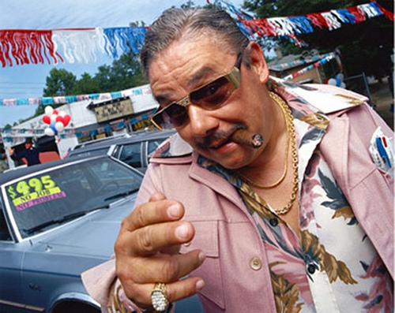

Cada cigarrillo te quita 5 minutos de vida
fumar 20 cigarrillos por día durante 20 años te quita
20 × 365 × 20 × 5 = 730.000 minutos de vida
≅ 1 año, 4 meses y 19 días
¡tomá mate!

con ustedes
Tangle
Cada cigarrillo te quita 5 minutos de vida
Fumar cigarrillos por día durante años te quita
minutos de vidaCada cigarrillo te quita 5 minutos de vida
Fumar cigarrillos por día durante años te quita
minutos días meses años de vidaCada cigarrillo te saca minutos de vida
Fumar cigarrillos por día durante años te quita
minutos días meses años de vidatexto... ¡y mucho más!
Tormenta de cerebros
¿en qué podemos usar esto?
Fumar cigarrillos
por día durante años
te quita minutos de vida
new Tangle(document.getElementById("un_div"), {
initialize: function () {
this.cant_cigarrillos = 20;
this.años = 20;
},
update: function () {
this.minutos = this.cant_cigarrillos * this.años * 365 * 5;
}
});
acotar los valores
TKNumberField
formatos
data-format
% del tiempo
Si el de los hogares de Argentina apagaran lamparitas de watts, eso ahorraría Wh por año
data-format
Tangle.formats.metric = function (value) {
var division = 1, modifier = "";
if (value >= 1e12) {
division = 1e12;
modifier = "T";
}
else if (value >= 1e9) {
division = 1e9;
modifier = "G";
}
else if (value >= 1e6) {
division = 1e6;
modifier = "M";
}
else if (value >= 1e3) {
division = 1e3;
modifier = "k";
}
return sprintf("%.2f", value/division) + " " + modifier;
};
Si el de los hogares de Argentina apagaran lamparitas de watts, eso ahorraría Wh por año
How do we make readers demand explorable explanations, and reject static text?
— Bret Victor
FIN
—